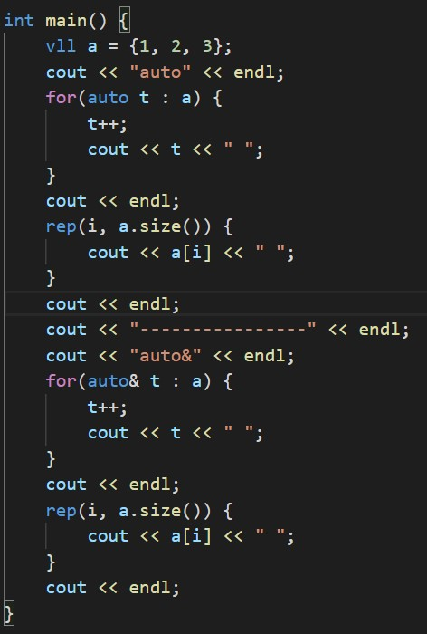
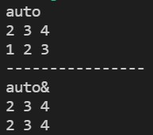

競プロにおける範囲for文(autoとauto&)の重要な違いは以下の通りです。
auto ... 配列等のコピーを生成してループを回す
auto& ... 配列等を参照してループを回す
そのため、以下のような使い方をすると両者に違いが出ます。

よって、以下のように使い分けるのが適切だと考えます。
auto& ... 基本的にはこっちを使う
auto ... 配列等の要素を使って何らかの操作をしたいが、元の値は保持しておきたいとき
このような使い分けにするとautoの方はかなり出番が少ないと思うので、範囲for文のマクロを組む時にはauto&で定義するほうが良いと思います。(もちろん両パターン作ってもいいが)
(auto& の"&"は参照渡しの際の"&"と同じ意味です)